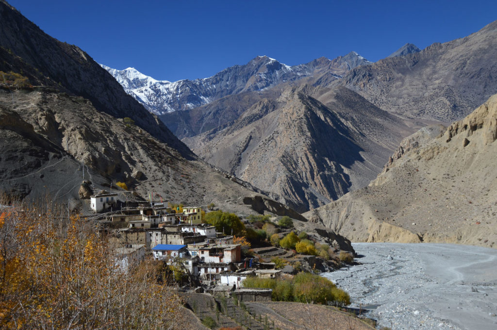
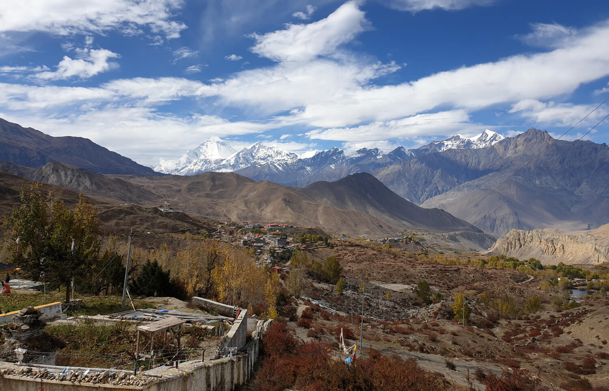
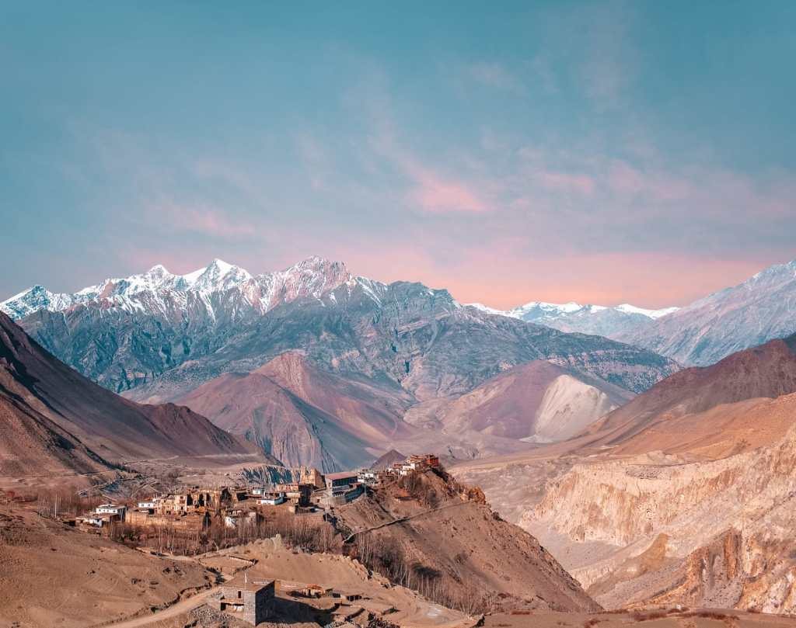
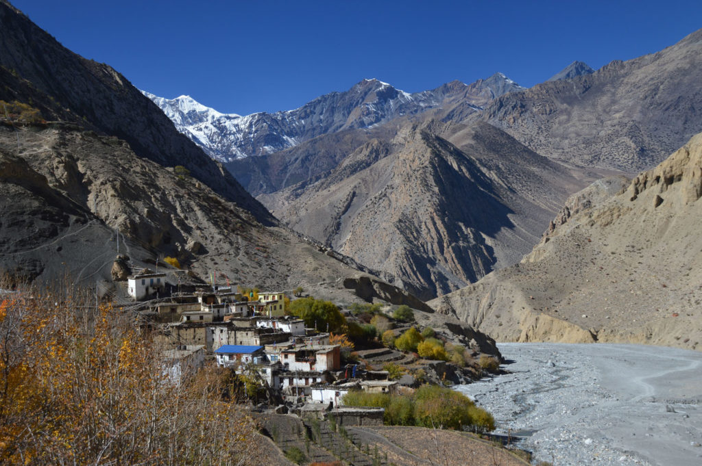
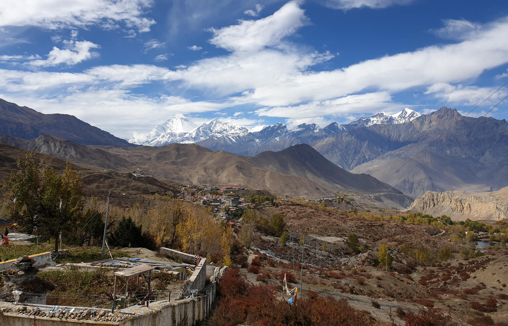
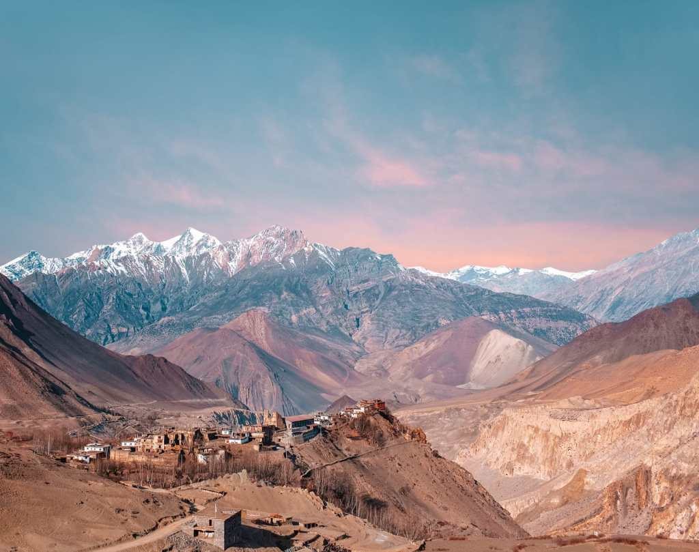

Hiking | Jomsom Trek
 





OVERVIEW
To the north of Pokhara is a trekkers paradise, famously known as the Jomsom trek. The trek in itself brings out the best that Nepal has to offer with the vast diversity along with high mountains and deep valley trails. In the Jomsom trek, one gets to sample differentiating geographical climates and terrains ranging from subtropical jungles to windy, dry plateau conditions which is a miniature picture of Tibet. Hikers are left in awe and wonder at such surreal scenery and culture. Cultures and traditions are unravelled to you, of both the high and low lands.
It is only obvious that this hiking route sees the vast majority of trekkers to Nepal, nearly 70%. The ascents are relatively easy when following the two set courses – Kali Gandaki to Jomsom and Muktinath. Either way, there is an incessant view of the mountains, the interaction of rural life and culture, not allowing you to return disappointed.
The Jomsom Trek in truth The trek begins in earnest from Nayapul after having been driven from Kathmandu, to Birethanti which is actually just a twenty minute hike. Having rested the night, the hike takes us to Tikhedhunga via pastures once used by ponies. The next leg of the trek is to Ghorepani – meaning white water through trails of soft pastures and lands cultivate to give way to think forests of wonderful rhododendron and oak. It is here that you also get a unscattered view Dhaulagiri, Tukuche, South Annapurna, Annapurna I and Tarke Kang formerly known as Glacier Dome.
Your next day’s destination is Tatopani, interestingly it name means hot springs as the area is abound in them and it is an area for citrus fruits. It is onto Ghasa and the trail is said to house one of the deepest gorges in the world in the Kali Gandaki Valley and at the same time you pass a few villages of the Magar, Brahmin and Thakales. There are cascading waterfalls and it is here that the vegetation changes from subtropical trees and shrubs to one of mountainous in nature such as pine and birch. The next on the route is Largung, where you get a circular view of Dhaulagiri, the three Nilgiris, Tukuche and Fang. The next stop on our trek is Marpha where you will get to pass apple orchards on the way. From here, it is onto Kagbeni and then onto Muktinath which is a sacred place for both the Hindus and Buddhist.The last leg of the trek it is onto Jomsom where you finally head back to Pokhara. source@greenlotustrekking